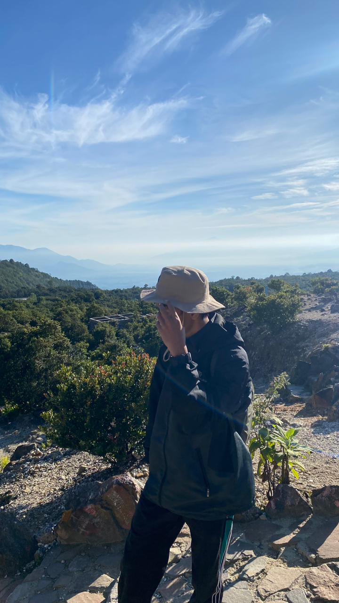

Judul Artikel Utama
Ini adalah paragraf pengantar.  Saudara-saudaraku sebangsa dan setanah air, kita semua menyadari bahwa masa depan bangsa ini berada di tangan kita sendiri. Tidak ada bangsa lain yang akan membuat Indonesia maju selain rakyat Indonesia sendiri. Karena itu, saya mengajak seluruh anak bangsa untuk bekerja keras, disiplin, dan selalu mengutamakan kepentingan negara di atas kepentingan pribadi. Kemandirian ekonomi dan kekuatan pertahanan harus kita bangun bersama agar kita tidak mudah digoyahkan oleh tekanan dari luar.
Kita memiliki sumber daya yang melimpah, tanah yang subur, dan rakyat yang tangguh. Tugas kita adalah mengelola semua potensi itu dengan jujur, adil, dan penuh tanggung jawab. Mari kita buktikan bahwa bangsa Indonesia adalah bangsa yang berdaulat, berdiri di atas kaki sendiri, dan siap membawa kesejahteraan bagi seluruh rakyat. Bersatu, kita pasti bisa mewujudkan Indonesia yang maju dan disegani dunia.